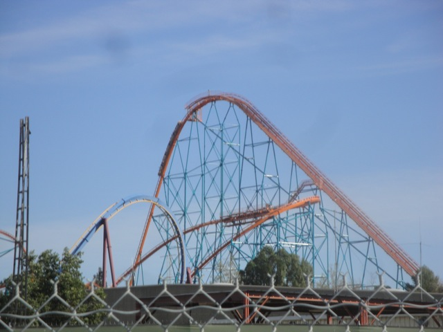
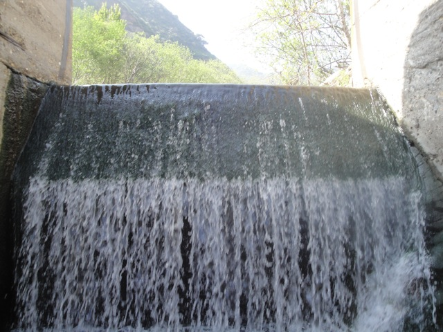

SFMM & Rindge Dam 2012
All right. This weekend, I decided to take a break and have some fun and get the hell out of Northridge. So I decided to go with the combination of Six Flags Magic Mountain on Saturday and Cliff Jumping on Sunday. And yeah. Here we are.
Hmm. I wonder how Log Jammer is doing?
Damn. That is depressing. Though the good news is that something big should come here in 2013. So hopefully that'll be a great new addition to Six Flags Magic Mountain.
Speaking of new additions to Six Flags Magic Mountain...
Yeah. Looking foreword to riding you this Spring Lex Luthor.

Goliath was running quite well this morning.
Notice anything different about Green Lantern?
Ok. Big rant here. Green Lantern officially got neutered. F*CKING LAME!!!! I mean...Just...What the f*ck Six Flags Magic Mountain!!!? What the f*ck!!!!? If you haven't noticed already, the Green Lantern cars now have these sort of X2 style elephant ears instead of the Ninja Stars. This, if you don't know, caused the ride to be PERMANENTLY BALANCED!!!! I'll say it again so that it'll sink into you. PERMANTLY BALANCED!!!!!! I know Green Lantern wasn't exactly run the greatest last year, with everyone saying that Insane @ Grona Lund being so much better, but when you unbalanced it, it was one of the best rides in Six Flags Magic Mountain. Get the right people sitting in the right spots with the right weight distribution, and HOLY CRAP!!!! It was Top 10 Material. It was frequently this amazing when it first opened. Occasionally, while I was working, I would randomly look at Green Lantern, and it was running so insane that I've seen this thing do 6 flips in a row right in the first half!!! 6 FLIPS!!!! ALL IN THE FIRST HALF!!!! HOLY SH*T!!!! I got some good rides in and all, but...GOD DAMN!!!!!! And sadly, the ride doesn't flip anymore. To get even a single flip on the final backhump, a spot that was previously guaranteed a flip even on a balanced ride pre-neutering. So yeah. You'll pretty much never see Green Lantern like this anymore. It's pretty f*cking depressing. Hell, this is all recent. Just last month, Green Lantern was still sporting the Ninja Stars, so it was still possible to go crazy on the ride. So why Six Flags Magic Mountain? Why did you go and f*cking destroy one of the best possible rides in your park? Though, you did manage to break a new record here. You broke the record for biggest drop in ranking of any coaster ridden. Seriously, not even the last coaster to have this record (Dueling Dragons for not dueling anymore) comes anywhere close to the drop that Green Lantern made. This went from my Top 10 List to not even the upper half of my entire coaster ranking list. That is sad Six Flags Magic Mountain. That is seriously sad.
Oh, and in other news, Green Lantern's Secret Single Riders Line is no longer a secret. This would be great and all, except for the whole you neuteured Green Lantern and ruined it forever thing.
Sadly, we did not get on Batman today due to the fact that it broke down on us right when we were about to board.
HOLY SH*T!!!!! NOT WORTH IT!!! NOT EVEN FOR X2!!! WHY'S THE LINE THIS LONG IN FEBRUARY TO BEGIN WITH!!!!?
Well since our day at SFMM sucked with not getting on X2, Batman breaking down, and Green Lantern permantly ruined, we left early for lunch at Jack in the Box.
All right. SFMM sucked, lets move on to the next day. We're going Cliff Jumping at Rindge Dam!!!
Yeah. Rindge Dam isn't exactly easy to get to. It's a bitch to find parking (make sure you look out for hidden signs), and once you do, you've got a mile walk along the road before you even start the climb the down. And yes, the road does go through a tunnel.
TAKE THE TUNNEL!!!!!!!
Yeah. Somewhere down there is Rindge Dam.
All right. Time to start the hike down.
 Hey look!! There's Rindge Dam!!!
Hey look!! There's Rindge Dam!!!
How the f*ck did this get down here!!!?
Tar Creek has the awesome rock, and Rindge Dam has the mystery car.
Oh, and if you're gonna hike down here, make sure you watch out for Stinging Nettle. It is not fun to touch this plant.
Yeah. You have to go under and over this rock. Better make sure that thing doesn't move or else you're really screwed.
How many Americans can even fit through this thing?
This isn't a rock. It is a ROCK LOBSTER!!!!!!
Those ladders look REALLY sturdy!!! =)

Some of the lovely water at Rindge Dam.
Don't fall into the hole of no return!!!
I kind of want to just take a break and relax right here.
Yeah. This takes the term "Don't Look Down" to a new meaning.
 YOU SHALL NOT PASS!!!!!!
YOU SHALL NOT PASS!!!!!!
Rindge Dam is proudly sponsered by Peace Man.
All right. Enough is enough!!! Lets get Cliff Jumping!!!
 We may not have gotten in quite as many jumps as we wanted to, nor would I say that this place is better than Tar Creek, but today was still freaking awesome and we will come back to Rindge Dam.
We may not have gotten in quite as many jumps as we wanted to, nor would I say that this place is better than Tar Creek, but today was still freaking awesome and we will come back to Rindge Dam.
 GRAVITY KICKS ASS!!!!!
GRAVITY KICKS ASS!!!!!
Something tells me that you don't want to mess with that spider.
And what better way to end this update than with a blank sign. Hmm. I smell a photoshop contest here.
Home